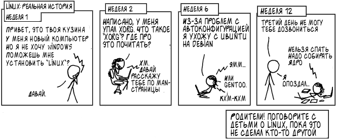

Работа на ЭВМ и программирование
Максим Александрович Кривчиков
к.ф.-м.н., старший научный сотрудник
Требования
Поведение в кабинете: не приходить в кабинет с едой и напитками, не ставить ноги на стол :) правила — на двери кабинета.
Для получения зачёта: сдать все выданные вам задачи, сдать автоматизированный зачёт.
Автоматизированный зачёт: ~ 20 декабря; нужно за полтора часа написать решение задачи и сделать так, чтобы она проходила наборы случайно сгенерированных тестов. Если на каком-то тесте программа не работает, вам будет показан её вывод и набор, на котором она “сломалась”.
Сдавать задачи можно только на компьютерах в дисплейных классах.
Операционная система GNU/Linux
Предостережение

Это действительно реальная история, и она ещё не знает, что попала в мой комикс, потому что у неё уже месяц не работает Wi-Fi.
Original: https://xkcd.com/456/
Окружение GNU/Linux
- Для Windows 10: Linux-окружение (Windows Subsystem for Linux) можно установить из Windows Marketplace (рекомендую)
https://www.microsoft.com/ru-ru/p/ubuntu-1804/9n9tngvndl3q
- Для любителей приключений: записать загрузочный образ на флешку (осторожно: это первый шаг к установке Linux :)
Советую для начинающих выбрать Ubuntu 18.04.
Литература
Лучше всего — материалы, рекомендуемые лектором.
Язык программирования C:
Учебник: А.В. Столяров (ВМК). Программирование: введение в профессию. II: Низкоуровневое программирование http://stolyarov.info/books/programming_intro/vol2
Справочник: Г. Шилдт. Полный справочник по C.
Man-страницы в командной строке (Например:
man 2 printf)На английском (привыкайте): https://zealdocs.org/
- Окружение GNU/Linux:
- Краткая справка, С.А. Афонин (мехмат). http://serg.tk/static/docs/1/memosheet.pdf